Co-op Commander Guide: Dehaka
Primal Pack Leader
Sections on this Page
Commander Summary
Dehaka uses Essence gained from fallen enemies to grow and get stronger, while being backed up with a powerful force of Primal units.

Level Unlocks
| Level/Icon | Name | Description |
|---|---|---|
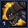 |
Essence Gatherer | Dehaka can collect essence, grow stronger, and choose mutations. Dehaka spawns in faster than other hero units and can devour Primal Drones to reduce his respawn time. |
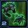 |
New Units: Ravasaur & Primal Igniter |
Units can be commanded to engage in primal combat to force evolutions. Unlocks the following new evolutions:
|
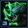 |
Ravasaur Upgrade Cache |
Unlocks the following upgrades at Glevig's Den:
|
| Deep Tunnel | Dehaka, Primal Wurms, and Greater Primal Wurms gain the ability to Deep Tunnel. | |
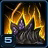 |
Primal Insight |
Dehaka’s maximum level increases from 10 to 12 and unlocks the following mutation choices for Dehaka:
|
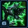 |
New Units: Primal Mutalisk & Primal Guardian |
Units can be commanded to engage in primal combat to force evolutions. Unlocks the following new evolutions:
|
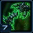 |
Primal Mutalisk & Primal Guardian Upgrade Cache |
Unlocks the following upgrades at Murvar’s Den:
|
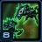 |
New Units: Creeper Host & Primal Impaler |
Units can be commanded to engage in primal combat to force evolutions. Unlocks the following new evolutions:
|
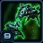 |
Primal Igniter & Primal Impaler Upgrade Cache |
Unlocks the following upgrades at Glevig's Den:
|
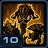 |
Evolved Pack Leaders |
The Pack Leaders and Primal Wurms gain new abilities:
|
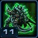 |
New Unit: Tyrannozor |
Units can be commanded to engage in primal combat to force evolutions. Unlocks the following new evolution:
|
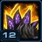 |
Survival Instinct |
Dehaka’s maximum level increases from 12 to 14 and unlocks the following mutation choices for Dehaka:
|
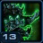 |
Elite Primal Zerg Upgrade Cache |
Unlocks the following upgrades at Murvar and Dakrun’s Dens:
|
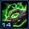 |
Zerus Cunning | Dehaka’s maximum level increases from 14 to 15 and Dehaka starts with an additional mutation point. |
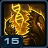 |
Gene Mutation | Primal combat evolutions have a chance to mutate, providing permanent passive bonuses that can increase life, attack speed, grant life leech, and more. |
Highlighted rows denote large power spikes for the commander.
Achievements
The commander-specific achievements for Dehaka are:
| Achievement | Name | Description |
|---|---|---|
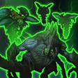 |
Essence Buffet | Devour 2,000 supply with Dehaka in Co-op Missions. |
| Power Leveling | Reach level 6 with Dehaka within the first 6 minutes on Hard difficulty. | |
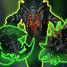 |
Primal Rage | Deal 400,000 damage with Glevig, Murvar, and Dakrun in Co-op Missions. |
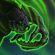 |
Smashy Smashy | Deal 800,000 damage with Dehaka in Co-op Missions. |
Calldowns
The calldowns for Dehaka, at level 15, with no mastery points added are:
| Calldown | Name | Description | Recommended Usage | Numbers |
|---|---|---|---|---|
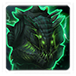 |
Summon Greater Primal Wurm | Requirements: Glevig's Den Summons a powerful temporary defensive Wurm that can detect cloaked and burrowed units. |
|
|
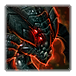 |
Summon Glevig | Requirements: Glevig's Den Summons the Primal Pack Leader Glevig and a small pack of Primal Zerg. Glevig is a powerful stationary ranged attacker that deals area damage and can relocate his position with Deep Tunnel. Glevig will fight for 60 seconds before returning to his den. |
|
|
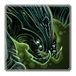 |
Summon Murvar | Requirements: Murvar's Den Summons the Primal Pack Leader Murvar. Murvar spawns locusts and can create a cloud that slows enemy movement speed and prevents enemy units and structures from attacking or using energy-based abilities. Murvar will fight for 60 seconds before returning to her den. |
|
|
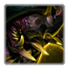 |
Summon Dakrun | Requirements: Dakrun's Den Summons the Primal Pack Leader Dakrun. Darkrun is a heavily armored juggernaut that can charge at a target location to deal heavy damage and knock back enemy units in the area. Dakrun will fight for 60 seconds before returning to his den. |
|
|
Each of the calldowns above bring a new unit onto the battlefield. These units have abilities themselves, shown below.
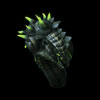
Greater Primal Wurm
| Ability | Name | Description | Cooldown |
|---|---|---|---|
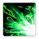 |
Greater Bile Stream | Deals 70 damage per second to the target unit for 5 seconds. | 20 seconds |
| Greater Deep Tunnel | Quickly burrow to any visible location. | 60 seconds |
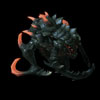
Glevig
| Ability | Name | Description | Cooldown |
|---|---|---|---|
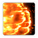 |
Incendiary Acid | Carpets the ground in fire. Enemy units in the area take 500 damage over 5 seconds. Can be set to Autocast. | 6 seconds |
| Deep Tunnel | Glevig burrows to the target location and erupts, dealing damage to units in the area and knocking them back. | 0 seconds |
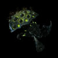
Murvar
| Ability | Name | Description | Cooldown |
|---|---|---|---|
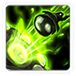 |
Spawn Swarm | Spawns 6 Primal Locusts and 6 Explosive Creepers that fight for 25 seconds. | 10 seconds |
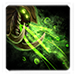 |
Oppressive Stench | Creates a cloud that slows enemy movement speed and prevents enemy units and structures from attacking or using energy-based abilities. Lasts for 5 seconds. | 3 seconds |
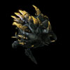
Dakrun
| Ability | Name | Description | Cooldown |
|---|---|---|---|
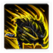 |
Brutal Charge | Charge to a target location knocking back units in the area and dealing 200 damage. | 10 seconds |
Sub-Ascension Leveling
Difficulty: Moderate
The biggest challenge with Dehaka is during the early game, where Dehaka only has one point to allocate. This point should go towards Devour. In early levels (before you have Primal Combat units), build Hydralisks and Ultralisks as your main army composition. The Ultralisks can tank while the Hydralisks deal damage from the back.
Masteries
Below are the three Power Sets for Dehaka with the recommended point allocations for each. Note that these are meant to serve a general, all-purpose build that is effective across all maps with no Prestiges selected. You are highly encourged to change these masteries to suit your playstyle and particular challenges you face (e.g. Weekly Mutations).
Power Set 1:
| Power | Value | Recommended Points to Add | Further Considerations |
|---|---|---|---|
| Devour Healing Increase | 1% per point 30% maximum |
30 | The Buff Duration mastery can help lengthen the time Dehaka has buffs, helping him move from one base to another while maintaining the buffs. A full stack of buffs can also strengthen Dehaka's survivability, however, the challenge comes in obtaining those buffs without the bonus to healing. |
| Devour Buff Duration | 3% per point 90% maximum |
0 |
With efficient play, Devour will have a short cooldown, allowing you to replenish the buff as needed, making the Buff Duration mastery redundant.
Power Set 2:
| Power | Value | Recommended Points to Add | Further Considerations |
|---|---|---|---|
| Greater Primal Wurm Cooldown | -2% per point -60% maximum |
0 | The Primal Wurm Cooldown can benefit players that prefer to spam the Wurms for vision, and for support. Note that the support they can provide Dehaka is minimal. Usually, it is better to not use them as much, rather than spending mastery points to reduce their cooldown. |
| Pack Leaders Active Duration | 1% per point 30% maximum |
30 |
The Pack Leaders are the most important calldowns for Dehaka, so increasing the time they stay on the field is the better pick.
Power Set 3:
| Power | Value | Recommended Points to Add | Further Considerations |
|---|---|---|---|
| Gene Mutation Chance | 1% per point 30% maximum |
? | Players that prefer to use Dehaka's combat units instead of Dehaka himself would probably prefer to use the Gene Mutation chance which can improve Dehaka's units significantly. |
| Dehaka Attack Speed | 1% per point 30% maximum |
? |
Both mastery choices are competitive choices, and the player will have to determine what mastery allocation to use to help their playstyle. The Gene Mutation Chance is slightly better as it is very rare for Dehaka to not utilize any army units.
Prestiges
Below are the prestiges for Dehaka. Note that "Effective Level" is the level at which the prestige achieves it full effect.
| Level | Name | Description | Effective Level | Notes |
|---|---|---|---|---|
| 1 | Devouring One |
|
1 |
|
| This prestige allows Dehaka to buff his own and allied units as he devours enemies in battle. It is especially powerful when playing with commanders that have Hero units. However, if your ally is not able to take advantage of Dehaka's buff's, the impact of the prestige is greatly diminished and the player is better off not using a Prestige Talent. | ||||
Devouring a Psionic unit will provide an ability cooldown buff to all units within Dehaka's vicinity. This makes Psionic units even more valuable. The interactions with various commanders' Heroic units are listed below:
| Level | Name | Description | Effective Level | Notes |
|---|---|---|---|---|
| 2 | Primal Contender |
|
1 |
|
| This prestige can vastly increase the amount of damage that can be dealt by Pack Leaders by increasing their life and allowing the player to spawn them more often. However, it can be challenging for players that are unaware on how to select Pack Leaders to deal with a situation they are facing. However, this presige does alleviate the pressure on players to micro several things at the same time, allowing them to focus on a single Pack Leader at a time. | ||||
| Level | Name | Description | Effective Level | Notes |
|---|---|---|---|---|
| 3 | Broodbrother |
|
1 |
|
| Because Essence is not shared between the two hero units, the amount of Essence required to reach maximum level is essentially doubled. Combined with the fact that micro-ing Dehaka (while also macro-ing behind) is already very difficult, adding a second Hero unit that also increases your liability makes this prestige fairly ineffective. | ||||
The choice of prestige will come down to both, player and ally skill. A player with a highly-skilled ally might be able to get a lot of value out of Devouring One. On the other hand, a highly-skilled player that understands how to use Pack Leaders effectively may get a lot of mileage out of Primal Contender. For safer play, playing without a Prestige Talent is fine too.
Hero Unit
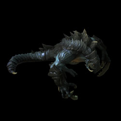
Spawn time: 1:00
Respawn time: 1:30
The abilities for Dehaka are (at max level 3):
| Ability | Name | Description | Cooldown |
|---|---|---|---|
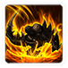 |
Leap | Dehaka leaps to the target location, dealing 145 damage to nearby enemy ground units. Each enemy hit grants Dehaka 1 armour for 2 seconds. | 10 seconds |
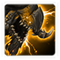 |
Intimidating Roar | Dehaka terrifies nearby enemies, reducing their movement speed by 75% and attack speed by 25% for 15 seconds. Enemies affected by Intimidating Roar have their armor reduced by 2 and cannot use abilities that cost energy. |
30 seconds |
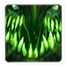 |
Devour | Instantly kill the target enemy unit to heal 5% Life and gain passive abilities based on the enemy type for 25 seconds. The cooldown is based on the amount of life the enemy has when killed. | ~ seconds |
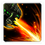 |
Scorching Breath | Dehaka's fiery breath scorches the earth, dealing weapon damage to all enemy units in its path. 3 charges max. | 30 seconds |
| Deep Tunnel | Quickly burrow to any visible location. | 60 seconds |
As Dehaka gathers esssence, he also gains increased attack and HP stats as follows:
- Attack: This is equal to (level +1)x10. For example, at level 11, he will have 120 attack.
- HP: For every Essence he gathers, he will gain +0.75 max life and regenerate 2 HP.
Recommended Army Composition
The recommended army composition for Dehaka is below. Note that this assumes no Prestige talent selected and recommended Mastery Allocations. This is a basic recommendation for your army framework. It is recommended to gain an understanding for each of the units in the Units section and further add tech units so that you are able to better handle the situations you face.
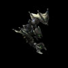
Primal Mutalisks provide an all-round solution to dealing with enemies. Remember that you will need to first engage attack wave with Dehaka (preferably devouring a Psionic unit to deal splash damage wiping out most of the dangerous units) and then cleaning up with the Mutalisks.
Combat Units
For more information on Dehaka's unit stats, comparison between units and upgrade calculations, visit the Data Tables page.
Dehaka's combat units are listed below:
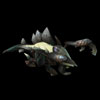
Primal Zergling
- Extremely basic unit.
- Generally not worth making, as they are outperformed by other units.
- Most commonly used to clear expansion rocks.
Skills: None
Upgrades: None
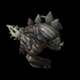
Ravasaur
- Created from 2 Zerglings through Primal Combat.
- Objectively worse than Primal Zerglings, due to reduced DPS.
Skills: None
Upgrades:
| Upgrade | Name | Effect |  / / |
Research Time |
|---|---|---|---|---|
| Dissolving Acid | Ravasaurs deal +15 damage to armored targets. | 100/100 | 60 seconds | |
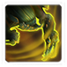 |
Enlarged Parotid Glands | Increases movement speed and attack range. | 100/100 | 60 seconds |
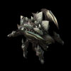
Primal Roach
- Basic unit.
- Doesn't see much play, due to it being less effective than its upgraded form, the Primal Igniter.
Skills: None
Upgrades:
| Upgrade | Name | Effect | / |
Research Time |
|---|---|---|---|---|
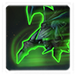 |
Glial Reconstitution | Increases the movement speed of Primal Roaches by 31% and Primal Igniters by 19%. | 100/100 | 60 seconds |
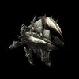
Primal Igniter
- Created from 2 Primal Roaches through Primal Combat.
- Extremely effective on infested maps, due to its splash damage, and bonus damage to light units with the "Concentrated Fire" upgrade.
Skills: None
Upgrades:
| Upgrade | Name | Effect | / |
Research Time |
|---|---|---|---|---|
| Glial Reconstitution | Increases the movement speed of Primal Roaches by 31% and Primal Igniters by 19%. | 100/100 | 60 seconds | |
| Concentrated Fire | Increases the Primal Igniter's damage against light enemies by 15. | 100/100 | 120 seconds |
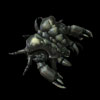
Primal Guardian
- Created from 2 Primal Roaches through Primal Combat.
- Effective on infested maps with the "Explosive Spores" upgrade.
- Useful in small numbers when dealing with ground compositions.
Skills:
| Skill | Name | Description | Cooldown | Energy Cost |
|---|---|---|---|---|
 |
Explosive Spores | Fires an Explosive Spore at the target, causing the target and all nearby enemy ground units to take 50 damage. | 10 seconds | 0 |
Upgrades:
| Upgrade | Name | Effect | / |
Research Time |
|---|---|---|---|---|
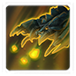 |
Explosive Spores | Primal Guardians can fire an Explosive Spore at the target, causing the target and all nearby enemy ground units to take 50 damage. | 100/100 | 60 seconds |
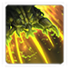 |
Primordial Fury | Primal Guardian attacks temporarily increases its attack speed by 10%. Can stack up to 50% increased attack speed. | 100/100 | 60 seconds |
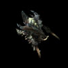
Primal Hydralisk
- Basic unit.
- Can be used on shorter maps, however, they are much more effective in their upgraded forms, Primal Mutalisks or Impalers.
Skills: None
Upgrades:
| Upgrade | Name | Effect | / |
Research Time |
|---|---|---|---|---|
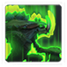 |
Muscular Augments | Increases Primal Hydralisk movement speed by 22% and attack range by 1. | 50/50 | 60 seconds |
Primal Mutalisk
- Created from 2 Primal Hydralisks through Primal Combat.
- The main work-horse of Dehaka's army.
- Great all-round unit that works in all situations, although not as effective as more specialized units.
- "Primal Reconstitution" allows Mutalisks to respawn, and should be obtained before bringing Mutalisks into combat.
- "Slicing Glaive" upgrade should only be obtained when dealing with enemy air compositions.
Skills: None
Upgrades:
| Upgrade | Name | Effect | / |
Research Time |
|---|---|---|---|---|
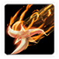 |
Slicing Glaive | Primal Mutalisks deal 100% increased damage against air units. | 100/100 | 60 seconds |
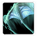 |
Shifting Carapace | Primal Mutalisks take 50% less damage while moving. | 100/100 | 60 seconds |
 |
Primal Reconstitution | Primal Mutalisks revive on death after a short time. Cannot occur more than once every 60 seconds. | 150/150 | 90 seconds |
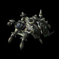
Impaler
- Created from 2 Primal Hydralisks through Primal Combat.
- Fantastic siege unit.
- Can deal great amounts of damage to structures.
- Has higher attack range than vision range.
Skills: None
Upgrades:
| Upgrade | Name | Effect | / |
Research Time |
|---|---|---|---|---|
| Tenderize | Units hit by Impalers become tenderized. Tenderized units take 200 damage over 10 seconds. A tenderized unit Devoured by Dehaka will invoke 25% of the normal cooldown time. | 100/100 | 60 seconds |
Primal Host
- Basic unit.
- Good structure DPS.
- Useful when trying to lay siege to enemy fortifications.
- Should be mixed in with its upgraded form, the Creeper Host.
Skills:
| Skill | Name | Description | Cooldown | Energy Cost |
|---|---|---|---|---|
| Spawn Primal Locusts | Siege unit that attacks by spawning Primal Locusts. Primal Locusts last 25 seconds. Primal Locusts can attack ground units. |
30 seconds | 0 |
Upgrades: None
Creeper Host
- Created from 2 Primal Hosts through Primal Combat.
- Good structure DPS.
- Useful when trying to lay siege to enemy fortifications.
- Extremely effective on defensive maps.
- Should be mixed in with its basic form, the Primal Host.
- "Aerial Burst Sacs" upgrade makes these significantly more effective.
- Can be useful when dealing with attack waves.
- Should be made in small quantities.
Skills:
| Skill | Name | Description | Cooldown | Energy Cost |
|---|---|---|---|---|
| Spawn Explosive Creeper | Siege unit that attacks by spawning Explosive Creepers. Creepers last 25 seconds. Creepers can attack ground units. |
30 seconds | 0 |
Upgrades:
| Upgrade | Name | Effect | / |
Research Time |
|---|---|---|---|---|
| Aerial Burst Sacs | Allows the Creeper Host's Creepers to target air units and increases their movement speed. | 150/150 | 90 seconds |
Primal Ultralisk
- Basic unit.
- Not commonly used, due to their high price.
Skills:
| Skill | Name | Description | Cooldown | Energy Cost |
|---|---|---|---|---|
 |
Brutal Charge | Charge to target location knocking back units in the area and dealing 25 damage. | 10 seconds | 0 |
Upgrades:
| Upgrade | Name | Effect | / |
Research Time |
|---|---|---|---|---|
| Brutal Charge | Primal Ultralisks can charge to a target location, knocking back units in the area and dealing 25 damage. | 50/50 | 60 seconds | |
| Healing Adaptation | Primal Ultralisks and Tyrannozors regenerate life quickly when out of combat (10HP/s). | 100/100 | 60 seconds | |
| Impaling Strike | Primal Ultralisk and Tyrannozor melee attacks have a 20% chance to stun for 2 seconds. | 100/100 | 60 seconds |
Tyrannozor
- Created from 2 Primal Ultralisks through Primal Combat.
- Extremely expensive unit.
- Rarely used due to its high cost, and its roles being filled by much cheaper units.
- Can be used to spawn-camp enemies with the Barrage of Spikes upgrade researched.
Skills:
| Skill | Name | Description | Cooldown | Energy Cost |
|---|---|---|---|---|
 |
Barrage of Spikes | Unleash a Barrage of Spikes, dealing 100 damage to enemy ground and air units around the Tyrannozor. | 10 seconds | 0 |
Upgrades:
| Upgrade | Name | Effect | / |
Research Time |
|---|---|---|---|---|
| Impaling Strike | Primal Ultralisk and Tyrannozor melee attacks have a 20% chance to stun for 2 seconds. | 100/100 | 60 seconds | |
| Barrage of Spikes | Tyrannozors can unleash a Barrage of Spikes, dealing 100 damage to nearby enemy ground and air units. | 100/100 | 60 seconds | |
| Healing Adaptation | Primal Ultralisks and Tyrannozors regenerate life quickly when out of combat (10HP/s). | 100/100 | 60 seconds | |
| Tyrant's Protection | Tyrannozors grants nearby friendly units 2 armor. | 100/100 | 60 seconds |
Build Order
Below is the standard economic build order for Dehaka. For more information on how to read and construct your own build orders, please check the Build Order Theory page.
23 Extractor
23 Primal Warden
25 Extractor
29 Glevig's Den
29 2x Zerglings -> Rocks
Primal Warden -> Rocks
31 Primal Hive
Gameplay Guide
Playstyle Traps
Most inexperienced Dehaka players will use the Dehaka hero unit to clear rocks as soon as he spawns, known in the co-op community as "Rockslapping". This is an extremely inefficient use of Dehaka, as enemies are at their weakest at the start of the game. A much more effective use for Dehaka would be to move near enemy camps and lure some of the units away and kill them. This allows you to gather Essence and level Dehaka up, allowing for greater pushing potential, survivability, and map clearing.
Essence Calculation
Essence drops are calculated as follows:
- If the unit is a Critter or the unit's supply is less than 1, base drop is 1
- If the unit is a Hybrid, base drop is 12
- If the unit's supply is more than 4, base drop is 12
- Otherwise, base drop is 2 x Unit Supply
Dehaka Skill Point Upgrades
The table below shows all the skill point upgrades available for Dehaka and their effects:
| Icon | Name | Description |
|---|---|---|
| Leap | Dehaka leaps to the target location, dealing 25 + 50% weapon damage to all enemy ground units in the area. Level 2 - Leap range increased by 6, Damage increased to 25 + 75% weapon damage. Level 3 - Each enemy hit also grants Dehaka 1 armor for 2 seconds. |
|
| Intimidating Roar | Dehaka intimidates nearby enemies, reducing their movement speed by 75% and attack speed by 25% for 15 seconds. Level 2 - Enemies affected by Intimidating Roar also cannot use abilities that cost energy. Level 3 - Enemies affected by Intimidating Roar also have armor reduced by 2. |
|
| Devour | Dehaka instantly kills the target enemy to heal 5% Life and gain passive abilities based on the enemy type for 15 seconds. The cooldown is based on the amount of life the enemy has when killed. Level 2 - Passive bonuses last 25 seconds. Range increased by 3 Level 3 - Cooldown reduced by 20%. Range increased by 3. |
|
| Scorching Breath | Dehaka's fiery breath scorches the earth, dealing weapon damage to all enemy ground units in its path. | |
| Primal Regeneration | Dehaka passively heals all allied units nearby. Level 2 - 2 life per second. Level 3 - 3 life per second. |
|
| Keen Senses | Allows Dehaka to detect cloaked, burrowed, and hallucinated units. | |
| Chitinous Plating | Increases Dehaka's armor by 3. | |
| Deadly Reach | Allows Dehaka to attack air units. |
Dehaka Stat Point Allocation Order
Below is the recommended order for allocating Dehaka's stat points. Essence drops at a rate of 2 Essence per supply of unit killed. Hybrids drop 12 Essence.
| Level | Allocate to | Cumulative Essence Required |
|---|---|---|
| 1 | Leap + Devour | 15 |
| 2 | Intimidating Roar | 45 |
| 3 | Devour | 90 |
| 4 | - | 150 |
| 5 | Chitinous Plating + Keen Senses | 225 |
| 6 | Scorching Breath | 315 |
| 7 | Intimidating Roar | 420 |
| 8 | Devour | 540 |
| 9 | Leap | 675 |
| 10* | Deadly Reach | 825 |
| 11 | Leap | 990 |
| 12 | Intimidating Roar | 1170 |
| 13 | Primal Regeneration | 1365 |
| 14 | Primal Regeneration | 1575 |
| 15 | Primal Regeneration | - |
* At level 10, Dehaka can be hit by air attacks.
Gene Mutations
Every time two units undergo Primal Combat, the resultant unit has a chance of gaining certain Gene Mutation buffs. Each buff has a 20% chance of being gained. The list of units and buffs available for each are shown below:
| Unit | |||||
|---|---|---|---|---|---|
| Adrenal Glands | Carapace | Leeching | Incubation Sacs | Spiked Hide | |
| This unit attacks 20% faster. | This unit has 50% more life. | This unit will leech 20% of damage done as life. | This Creeper Host spawns double the amount of Creepers. | Each time this unit takes damage, it shoots a spine back at the attacker that deals 10 damage. | |
| Ravasaur | |||||
| Primal Igniter | |||||
| Primal Guardian | |||||
| Primal Mutalisk | |||||
| Impaler | |||||
| Creeper Host | |||||
| Tyrannozor |
Devour Mechanics
Whenever Dehaka devours a unit, a certain cooldown will be applied to Devour. It works as follows:
- If the unit has 600HP or more: 60 seconds cooldown will be applied.
- If the unit has less than 600 HP: A cooldown of 10% of its HP (in seconds) will be applied.
Note that if a unit is Tenderized through Dehaka's Impalers, the cooldown will be reduced by 75%. If a Psionic unit has been devoured, a buff reduces cooldowns by 50%.
Additionally, units will provide a buff to Dehaka for 25 seconds. The buffs Dehaka gets are dependent on the tags the unit has. These are as follows:
| Tag | Buff |
|---|---|
| Air | Gain a ranged attack |
| Armored | Gain 30% bonus damage against armored units |
| Biological | Heal 20% life |
| Light | Gain 30% move speed |
| Massive | Gain 3 armor and reflect damage (10 per hit) at attackers |
| Mechanical | Gain 30% attack speed |
| Psionic | Explode with Psionic Energy (2x Dehaka Weapon damage) and abilities cooldowns halved. |
Devouring Psionic units is a critical part of good Dehaka play. Being able to pick out High Templars and other Psionic units from the middle of attack waves to clear them entirely is a key part of this play. Below is a list of the Psionic units that can be found in Amon's army:
- Protoss: Arbiter, Archon, Dark Templar, High Templar, Mothership, Oracle, Sentry, Warp Prism
- Terran: Ghost, Raven, Science Vessel
- Zerg: Brood Queen, Infestor, Queen, Swarm Queen, Viper
- Hybrid: Hybrid Dominator
Essence Farming
As soon as Dehaka has spawned, he should be sent towards enemy bases to kill units and gather Essence. Using Dehaka to clear expansion rocks (referred to as "Rockslapping") is one of the most inefficient things a Dehaka player can do, due to Dehaka's low attack speed and low attack damage. The table below provides a guide for the path Dehaka should take on each of the missions to gather Essence as effectively as possible.
| Mission | Protoss | Terran | Zerg |
|---|---|---|---|
| Chain of Ascension |
Start with the camp in between the two expansions. Use Devour on the Sentries and High Templars to quickly deal splash damage to enemy units before moving on to the camp guarding your expansion. |
The presence of Bunkers make gathering Essence difficult. Clear the Bunker guarding your expansion first, then move towards the central camp to gather more Essence. Focus on the Biological units, rather than the Bunkers. |
Clear your expansion first, by using Devour on straight on the Ultralisk. The damage reflect will cause the other units around Dehaka to kill themselves, clearing the entire expansion. As units take damage, they may try to kite you, so make sure Dehaka doesn't get lured into the camp in the between the expansions until you are ready. |
| Cradle of Death |
Start with the expansion area and Devour Sentries to quickly deal damage to enemy units. Watch out for the Constructs. Then move to the right camp first due to the higher number of biological units. |
Start with the expansion area and Devour Medics to reduce healing. Then move to the right camp first due to the presence of biological units. |
Start with the camp on the right. Weaken the Aberrations and Devour them. With the buff, move to the expansion area and use the damage reflect to quickly kill off defenders. |
| Dead of Night* |
Clear the camp to the West of enemy units. Then move South to the camp defenders and then move deeper. Devour Sentries to quickly deal damage to the enemies in the defending camp. During the night, move to the bottom of the ramp to the North-Western area. Several Aberrations will spawn allowing you to level Dehaka quickly. |
Start with the camp defenders in the South West and then East and clear the small number of defenders there. Then move out and down towards the remaining enemy camp. Devour the units as you destroy the Bunker. During the night, move to the bottom of the ramp to the North-Western area. Several Aberrations will spawn allowing you to level Dehaka quickly. |
Clear the camp to the West of enemy units. Then move South, working your way across the camp defenders. Weaken Aberrations and use Devour to gain a damage-reflect buff. During the night, move to the bottom of the ramp to the North-Western area. Several Aberrations will spawn allowing you to level Dehaka quickly. |
| Lock & Load |
Clear the units around the central Celestial Lock. Then, creep along the edge of the Northern area of that lock and make your way towards the area outside the Northern Celestial Lock. Clear those units, using the Sentry to help. Then, Deep Tunnel back to your main, and clear the ground units at the Southern Celestial Lock. |
Clear the units around the Central Celestial Lock. Then lure units away from the Bunkers North of that Lock. Move North and clear the small number of units on the low ground outside the Northern Celestial Lock. Next, Deep Tunnel back to the base. Go the ramp to the Northern Celestial Lock, and lure units away from the camp. Finally, lure units away from the Bunkers and Siege Tanks at the Western Celestial Lock. |
Clear the units to the East of the Centeral Celestial Lock by using the Vipers in that location. Then, clear the units guarding the Central Celestial Lock, weaking the Aberrations and Devouring them to take advantage of the damage reflect buff. Next, move to the Southern Celestial Lock, Devouring Vipers to clear the units there. Finally, move to the ramp for the Northern Celestial Lock, Devouring Infestors to clear units in that area. |
| Malwarfare |
Clear the units guarding both your expansions first. Then move North, and kill the units near the Cannon by luring them away. Then move East and clear the units in that area. Kill the Immortal first and use Zealots to heal Dehaka. |
Clear the units guarding both your expansions first. Target the Bunkers down, and use the units around to heal Dehaka until the Bunkers are on fire. Allow the Bunkers to burn down while you work away on the other expansion. Once both areas are cleared, move North East and clear the units in that area. |
Clear the units guarding both your expansions first. Then move North and clear the units there by luring them away from the Spine Crawlers. Then move East and clear that camp. |
| Miner Evacuation |
Gathering Essence on this map is very difficult, due to the large presence of infested units which do not drop Essence. First, check if there are units near the Evacuation Ship at the East of the expansion. Clear the units there (which consists of Infestors and Aberrations). Then move towards the expansion area. Once cleared, you may move directly North to clear that area, and then to the top-right Evacuation ship area. In the top areas, Infestors are present, which helps clearing those areas. |
||
| Mist Opportunities |

To start, clear the enemies near the first geyser, which includes a Stalker and two Zealots. Then clear the enemies near the first Geyser. Move West and clear the enemies near the next set of geysers, using Devour on Sentries to quickly clear them. If you have more time, you may start clearing the enemies around the camp blocking the third set of geysers. With good timing, you may Devour that Sentry and use its explosion to clear the attack wave too. |
To start, clear the enemies near the first geyser, which includes a Marauder and three marines. Then clear the enemies near the first Geyser. Move West and clear the enemies near the next set of geysers. If you have more time, you may start clearing the enemies around the camp blocking the third set of geysers by luring them away from the Bunker and Siege Tank. |

To start, clear the enemies near the first geyser, which includes a Hydralisk and two Roaches. Then clear the enemies near the first Geyser. Move West and clear the enemies near the next set of geysers, skipping the Spine Crawlers. If you have more time, you may start clearing the enemies around the camp blocking the third set of geysers by luring them away from the Spine Crawler. |
| Oblivion Express |
Clear the small plateau to the East of your main, Devouring the High Templar to quickly clear that enemies in that area. Then move to the base near the start of the middle tracks. Devour the High Templar to quickly clear the defenders, then move South and Devour the High Templar there. Once cleared, move back North, the High Templars would have been re-made, allowing you to gather more Essence. Keep alternating between these two locations. |
Clear the small plateau to the East of your main, then clear the small plateau to the South of your main. Once cleared, move to the base at the start of the top set of tracks and slowly work your way through the units. Devour the Ghost to quickly clear the defenders in that location. Beware of the Bunkers and the Siege Tank located on the high ground. |
Clear the small plateau to the East of your main, Devouring the Infestor to quickly clear that enemies in that area. Then, move North to the base, Devouring the Infestor and weakening the Ultralisk before Devouring it. You will use this damage reflect to weaken the Brood Lord before Devouring it. Watch out for the Corruptor, which will cast Corruption, causing Dehaka to take bonus damage. |
| Part & Parcel |
Clear the defenders outside the top ramp by luring them away from the Cannon. Then, move North and clear the enemies in that location, using the Sentry to clear them quickly. Once cleared, move to the expansion, using the Sentry there to clear the enemies in that location. |
The presence of Bunkers makes gathering Essence very difficult. Clear the defenders outside the top ramp by luring them away from the Bunker. Then, move North and clear the enemies in that location. You may then move South and clear the enemies around the Bunker. Alternatively, damaging a Bunker will cause SCV's to be sent from around the map. You may Devour them for HP sustain. |
Clear the small group of Roaches outside the bottom ramp, then work your way up North. You may lure enemies away from the Spine Crawler. Once the top defenders are cleared (preferably with the Aberration being Devoured last), you may clear the expansion. |
| Rifts to Korhal |
Clear the defenders at the first Void Shard location, using the Sentries for AoE. Then move towards the second Void Shard location, luring units away from the Cannons. Beware of the edges of the base, as there are Dark Templars there. |
Clear the defenders at the first Void Shard location. Then move towards the second Void Shard location, luring units away from the Bunkers and Siege Tanks. |
Clear the defenders at the first Void Shard location. Then move towards the second Void Shard location. Lurkers and Swarm Hosts are burrowed, but there are several Infestors which can be Devoured for fast clearing the area. |
| Scythe of Amon |
Clear the defenders near the first Void Sliver. Watch out for the Photon Cannon near the first Sliver. Then, make your way towards the second Void Sliver, clearing the camp between the two locations. Devour the Aberration for a damage reflect buff to quickly clear the defenders in that location. |
Clear the defenders near the first Void Sliver. Then, make your way towards the second Void Sliver, clearing the camp between the two locations by luring units away from the Bunker. |
Clear the defenders near the first Void Sliver. Then, make your way towards the second Void Sliver, clearing the camp between the two locations. Devour the Aberration for a damage reflect buff to quickly clear the defenders in that location. |
| Temple of the Past |
Use Deep Tunnel to move Dehaka to the opposite side of the rocks. Then, clear units guarding each of the Zenith stones. If timed correctly, you will be able to intercept the first attack wave with Dehaka using Deep Tunnel. Make sure you target the Zenith Stone on the middle lane last, as this will allow you to intercept the attack wave without having to wait for Deep Tunnel. |
||
| The Vermillion Problem |
Use Dehaka to start clearing the expansion. You can use Devour on workers to sustain HP. Continue to clear the expansion until the first attack wave, where you can Deep Tunnel back to intercept it. |
In the case of Zerg compositions, it is better to target the island to the West of the expansion first. There are Vipers present in that area, with plenty of Scourge which can be used for quick Devours. Once that area is cleared, you can make your way towards the expansion and start clearing that. |
|
| Void Launch |
Clear the final bonus area first by sneaking Dehaka along the edges of the camp guarding that area. Devour the High Templar and Sentry to quickly kill off the units there. Then, exit the same way you entered, and clear the units outside the right base entrance, Devouring the Sentry and weakened Archon. Once cleared, you may clear the second bonus area by Devouring the Sentry and an air unit. |
Bunkers and Siege Tanks make gathering Essence difficult on this map. Clear the units (and Bunker) around the first bonus area, then move East and clear the units in that area too. Try to Devour Ghosts before they use Cloak to take advantage of the AoE damage they cause. |
Clear the first bonus area and work your way East. The enemies outside the right entrance consist of Infestors which can be used to quickly clear that area. Near the second bonus area, there is a Viper which can be used to clear, but watch out for the Swarm Hosts. |
| Void Thrashing |
Clear the defenders outside the first Void Thrasher spawn point. Then move East, clearing the defenders in the enemy camp. Devour Sentries and Archons to quickly clear that area. Move to the entrance of the North base and lure enemy units down the ramp and clear them. |
Bunkers and Siege Tanks make gathering Essence difficult. Clear the defenders outside the first Void Thrasher spawn point. Then move East, clearing the defenders in the enemy camp. Lure them away from the two Siege Tanks in that location. |
Clear the defenders outside the first Void Thrasher spawn point. Then move East, clearing the defenders in the enemy camp. Watch out for the Banelings as they can surprise you with their high burst damage. Once those defenders are cleared, move West to the camp outside the second Void Thrasher spawn. Devour Infestors and weakened Aberrations to quickly clear that area. |
* Dehaka has a very high survivability on Dead of Night, due to the large number of low-HP Infested units scattered around the map. While they do not drop Essence, use them to your advantage to keep Dehaka alive while you farm Essence from Amon's units.
Playstyle Tips
- Gather essence with Dehaka as soon as he spawns.
- Target Psionic units with Dehaka to take advantage of the area damage it causes.
- Avoid devouring high-HP targets. Weaken units first before devouring them.
- Greater Primal Wurms do not require vision to be summoned, as long as you can see the terrain. Use them to get vision so you can Deep Tunnel Dehaka over.
- If Dehaka dies, use drones to instantly respawn him. Each drone reduces Dehaka's respawn time by 24 seconds (-1 second per level for Dehaka). This can have huge negative impact on your economy in the early game, so make sure you don't lose him at the start, when he is at his weakest.